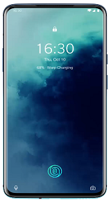
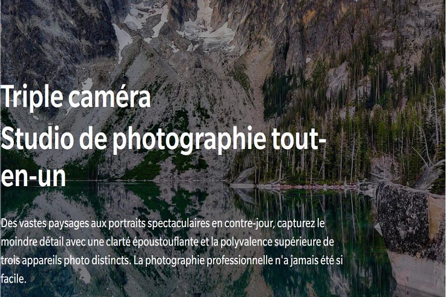

Le meilleur de tout.Avec un stockage UFS 3.0 et la RAM Boost (stimulation de la RAM) rapides comme l'éclair, le OnePlus 7T Pro allie un matériel de pointe avec un logiciel amélioré pour des performances rapides et fluides; pour du multitâche de tous les jours aux jeux 3D les plus exigeants. Qualcomm Snapdragon 855+La nouvelle référence en matière de performances mobiles, se targuant de graphiques et de vitesse de traitement 15 % plus rapides. |
Warp Charge 30TLa méthode de chargement légendaire de OnePlus que vous connaissez et adorez, a encore été améliorée. Découvrez une vitesse plus rapide et plus constante, la Warp Charge 30T assure une charge d'environ 68% en seulement 30 minutes. Ne vous souciez plus jamais des problèmes de batterie. |
 |

Les caracteristiques |
||||
|---|---|---|---|---|
 |
||||
Fonction NightscapePrenez des photos plus lumineuses et plus claires en cas de faible luminosité avec la fonction Nightscape, disponible sur l'objectif principal et sur l'ultra grand-angle. |
Ultra grand-angleCapturez de vastes paysages ou réalisez des photos de groupes grâce à un champ de vision panoramique de 117 °. |
Téléobjectif 3xVous photographiez de loin ? Passez au téléobjectif pour bénéficier d'un zoom optique 3x d'une clarté cristalline. |